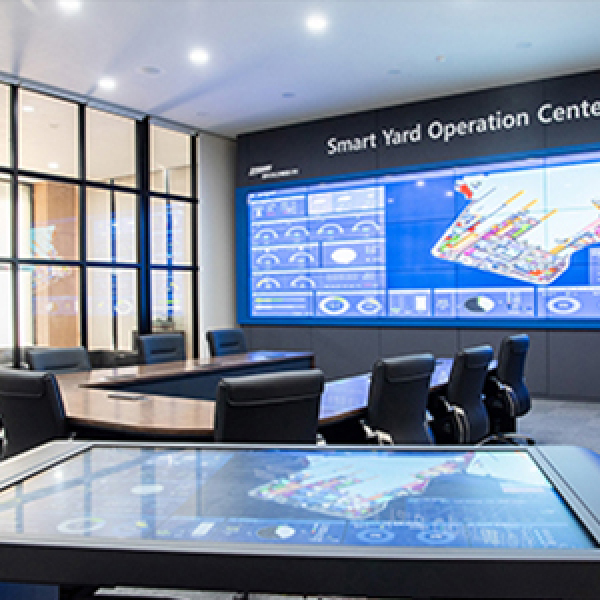

중앙연구원
한국 조선해양기술을 선도하는 업계 대표 연구원
연구소
중앙연구원은 회사의 미래 성장 동력으로서 선박∙해양플랜트∙특수선
분야의 기술발전을 주도하고 있습니다.
이를 위해, 시흥과 옥포에 최첨단 연구설비와 우수한 연구 인력을
갖춘 3개의 연구소 조직으로 구성되어 있습니다.
연구 설비
-
- 예인수조 (300m x 16m x 7m)
-
실제 선박과 동일한 형상으로 축소 제작한 모형선으로
해상에서의 선박 저항/추진/운동/조종 성능을 예측하고 평가할
수 있는 시험 설비
-
- 공동수조 (13.0m x 2.8m x 2.4m)
-
프로펠러 캐비테이션, 침식, 변동압력, 수중방사소음, 3차원
유동계측 시험 설비
-
- 음향수조 (25m x 15m x 10m)
-
수중에서 음파를 이용하여 대상 표적의 음향학적 특성 분석
설비
-
-
친환경연료 LBTS
(Land Based Test Site)
-
친환경 연료 시스템 연구개발 및 실증을 위한 시험 설비
-
-
DS4 육상관제센터 (DSME Smartship Solution)
-
선박운항데이터를 위성통신을 통해 실시간으로 수집, 분석하여
보다 더 효율적이고 안전한 선박 운항을 구현하기 위한 설비
-

- 스마트야드 실증센터
-
최신 ICT 기술을 야드에 적용하여 실시간 생산 Data의 연결화,
자동화, 지능화를 통해 생산 계획을 최적화하고 생산 운영
효율 향상 연구 설비
-
- 지능형 생산기술 연구센터
-
친환경 생산기술과 안전성 극대화를 위한 연구개발 및
스마트야드 구현을 위한 최신 생산기술과 Digital
Transformation 연구개발 설비
-
- 에너지시스템 실험센터
-
다양한 LNG System에 대한 테스트와 탈탄소화를 대비한 친환경
연료 테스트 설비
-
- 슬로싱 연구센터
-
극저온 액화 화물창 및 연료탱크의 안전성 확보를 위한 슬로싱
모형 시험 설비